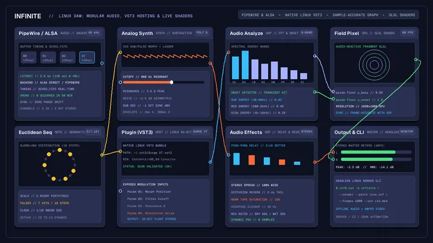
6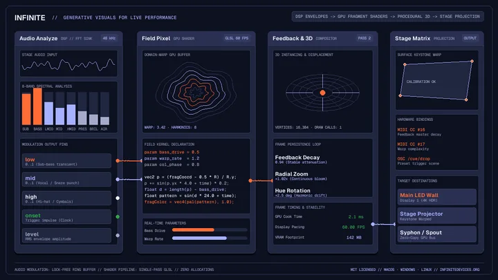
7Generative visuals in live performance: audio, nodes and GPU
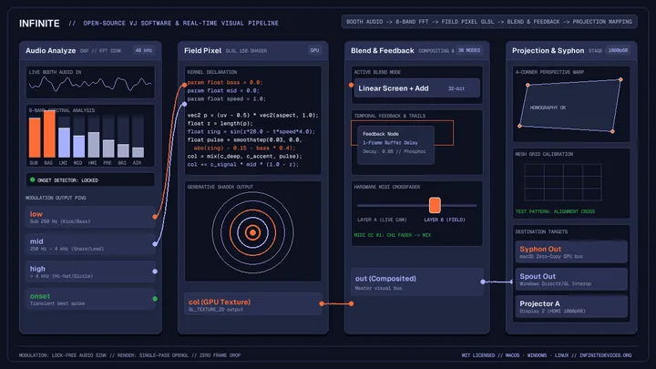
7Open source VJ software: real-time visual performance in Infinite
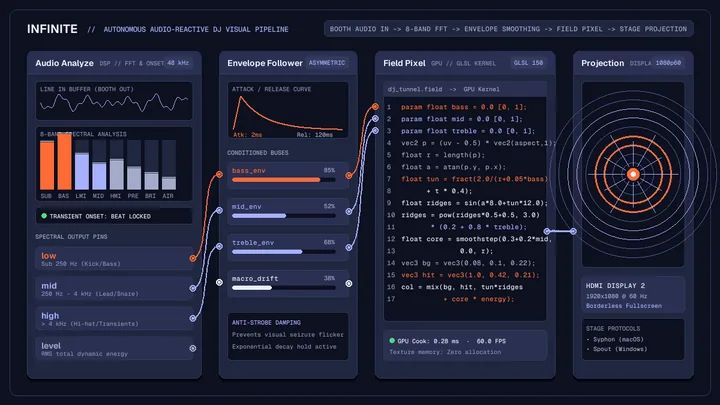
8Automatic visuals for DJ sets: hands-free live visuals in Infinite
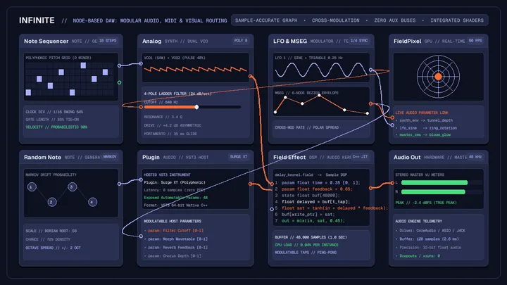
8Node-based DAW workflows: modular audio routing on an infinite canvas
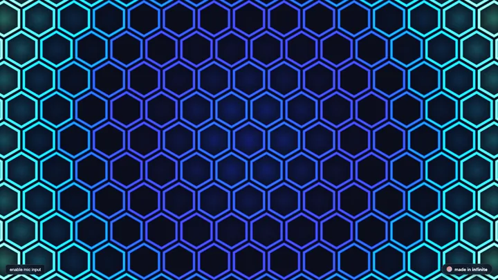
15Every note node in Infinite: generative arpeggiators and algorithmic sequencing
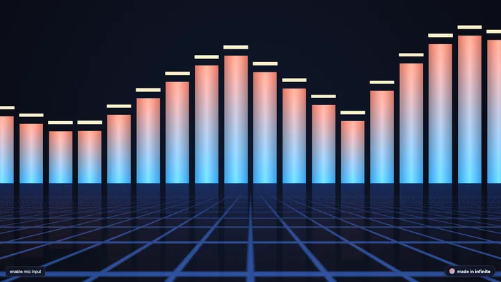
15Every synthesizer node in Infinite: the complete sound design guide
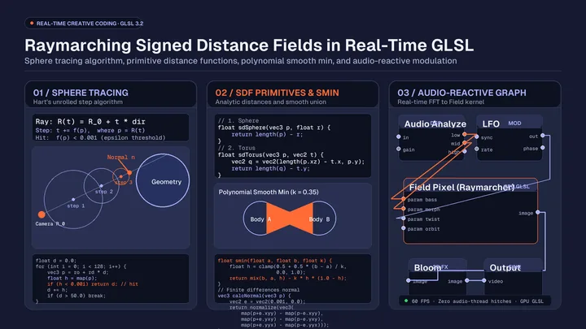
11Raymarching signed distance fields in real-time GLSL
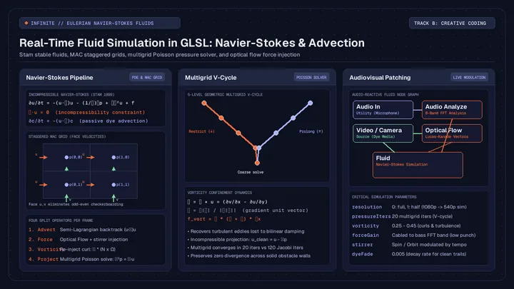
14Real-time fluid simulation in GLSL: Navier-Stokes and dye advection
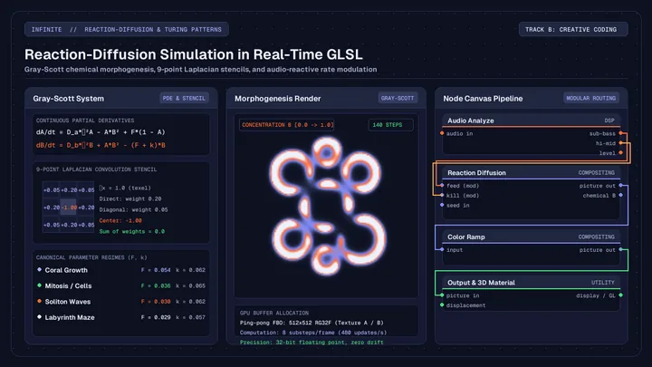
11Reaction-diffusion simulation in real-time GLSL
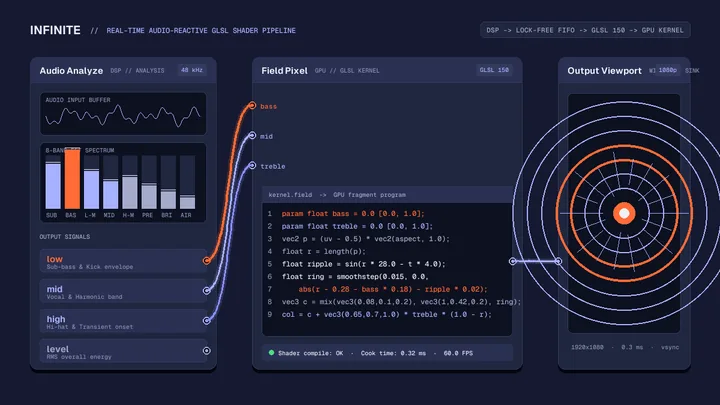
6Audio-reactive GLSL shaders: writing real-time visuals in Infinite
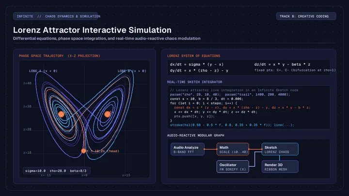
8Lorenz attractor interactive simulation in creative coding
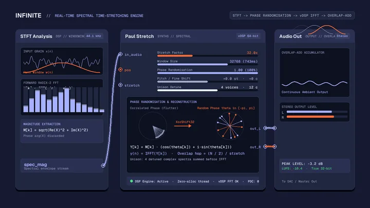
8PaulStretch on Mac: extreme spectral time stretching in Infinite
 6
6
Euclidean rhythm sequencer algorithms for modular music
 4
4
Embedding interactive audio-reactive WebGL visuals on any website
 5
5
unique nodes in infinite: wave terrain, shape resonator, cymatics
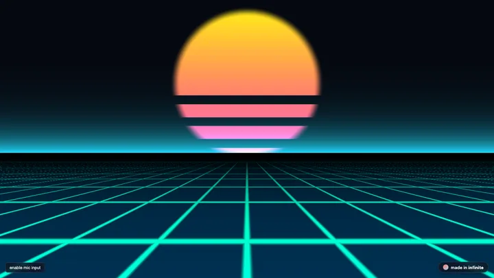
3AI agent MCP guide for audio and visual synthesis
 7
7
AI agents make music, art and 3D with Infinite headless engine
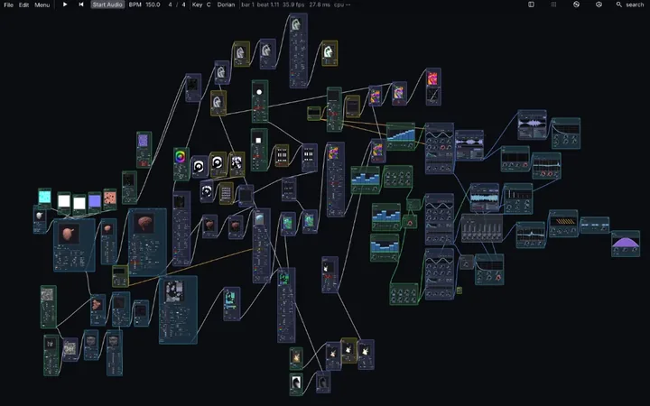
2writing audio dsp without juce: notes from infinite
3
Sound design in Infinite: sub bass, plucks, and pads
2
Hardware MIDI and controller mapping in Infinite
 2
2
javascript sketches as nodes: draw with code, wire it to anything
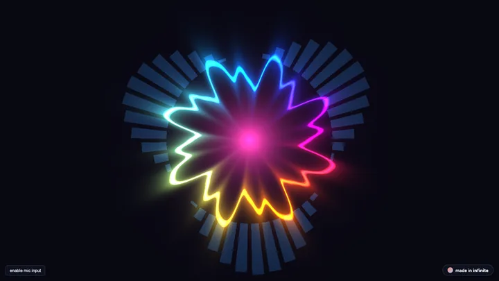
3Writing 48kHz audio DSP kernels in Field language
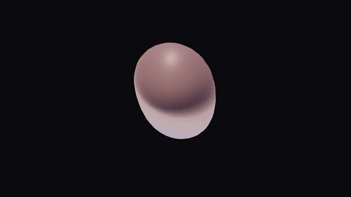
2Procedural 3D geometry and audio mesh deformation
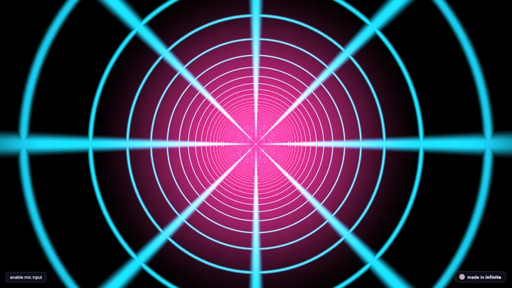
2Bringing Shadertoy GLSL shaders into Infinite for audio reactivity
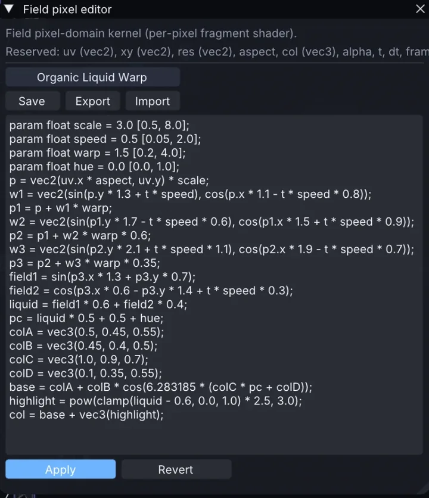
2Field: write a short kernel and let the node decide where it runs
 2
2
A free TouchDesigner alternative for audio-reactive visuals?
3
Infinite v0.6 benchmarks: where it is fast and where it is not
 2
2
Make your first audio-reactive visual in Infinite
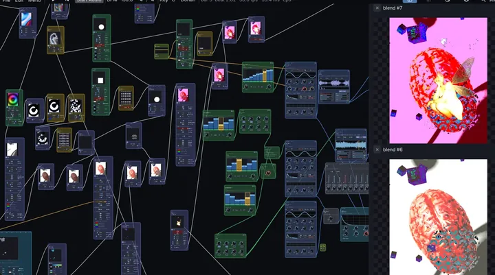
2Modulate any VST3 or AU plugin with LFOs, audio and visuals
4
Free motion tracking for music and visuals in Infinite
2
One graph for sound and pictures: how Infinite keeps them in step
3
Render video and audio from a text file with no window open
Linux DAW workflows: modular audio, VST3 hosting and live visuals
No posts in this group yet.